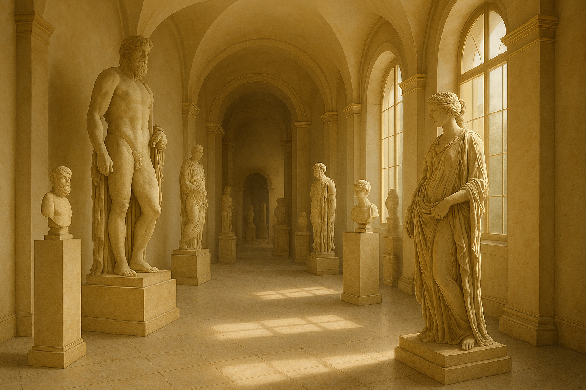

Where History Lives in Stone
The Manus Statue Museum is a sanctuary for lovers of art and history, housing a vast collection of statues crafted over centuries. Each piece offers a glimpse into the lives, beliefs, and craftsmanship of ancient civilizations.
From monumental sculptures to delicate carvings, our collection preserves the spirit and stories of the past, inviting visitors to step back in time and experience the timeless beauty and cultural significance of these masterpieces.
